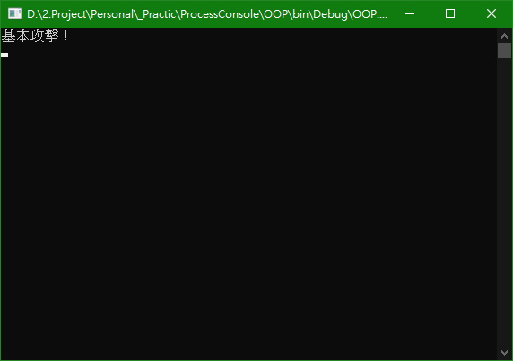
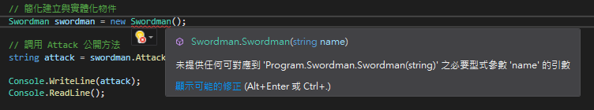
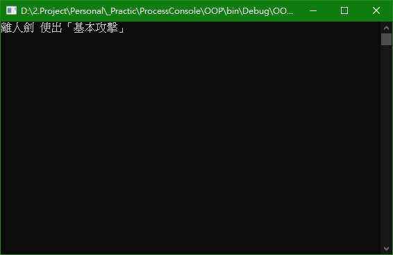
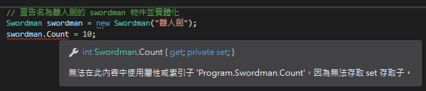
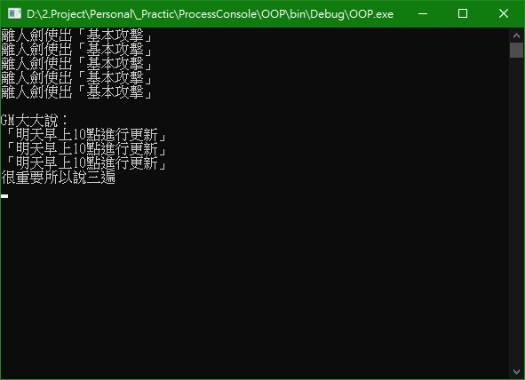

前言
物件導向（Object-Oriented Programming），意為針對物件進行程式設計。而學習設計模式前必須先了解物件導向設計，不然難以體會設計模式的魅力。
正文
類別（Class）
具有相同屬性（Attribute）和功能（Method）的物件之抽象集合。定義類別的關鍵字為「class」，類別命名規則為第一個字母為大寫，多個單字命名時各個首字母為大寫。
1 | // 建立 Swordman 類別 |
物件（Object）
物件是一個獨立的實體，實體裡包含許多資料，資料彼此之間不會互相影響，每個皆為獨立的資料。物件與類別的關係，最簡單易懂又不抽象的解釋為：物件是類別的實體。
1 | // 宣告一個名為 swordman 的 Swordman 物件 |
在程式碼的世界裡，萬物皆為物件。
實體（Instance）
實體化為建立物件的過程，使用「new」關鍵字建立。
1 | // 實體化 swordman 物件 |
綜合上述介紹的類別、物件和實體，演練一下並看結果。
在 Swordman 有一個公開的 Attack 方法，當物件被實體化後可以未來就能一直呼叫該方法
1 | static void Main(string[] args) |

建構式（Constructor）
又稱建構函式或建構子，建構式為對類別初始化的函數，建構式與類別同名，無返回值也不需要 void，在 new 時調用。在未定義建構式時編譯器會自動產生空的建構式。
根據上述例子，在實體化 swordman 物件時，new 後面的 Swordman() 就是建構式，而建立 Swordman 類別時未定義建構子，所以編譯器自動產生空的 Constructor 讓 swordman 成功實體化。
演練：利用建構式來給 swordman 增加 Name
在 Swordman 類別裡加入下列私有變數及建構子
1 | // 定義私有變數 name |
當新的建構子被建立時，編譯器變不再自動產生空的建構子，swordman 實體化時會得到紅色毛毛蟲，給予對應的參數讓物件能成功實體化。

給 swordman 一個瀟灑的 ID，Attack() 返回的值增加私有變數
1 | Swordman swordman = new Swordman("離人劍"); |
當宣告 swordman 物件時帶入［離人劍］，［離人劍］會存到類別的私有變數 name 裡，最後 Attack 方法內調用私有變數作為返回值。

多載（Overloading）
多載意即方法重載，多載為可同時建立同名的函數（Function），函數須使用不同的參數類型或不同個數。
假設不想取名就直接實體化物件，就必須再建立一個不帶參數的建構式，與原本的建構式共存，就是方法重載。
1 | // 建立 Swordman 類別 |
欄位（Field）
欄位用來儲存類別要滿足設計所需的資料，簡化為儲存資料的意思，通常為私有的類別變數，只能供類別內部使用的變數，一般命名規則通常開頭字母為小寫。比方 Swordman 類別裡定義的私有變數 name 即為欄位，僅供內部使用，而外部無法調用。
1 | // 建立 Swordman 類別 |
屬性（Property）
屬性為類別的一個欄位（看起來有點詭異），通常是給外部調用，屬性的命名規則通常開頭字母為大寫，下面範例看起來與欄位區別不大，不過隨著後面的介紹與使用，欄位與屬性的定義會越來越清晰。
1 | // 建立 Swordman 類別 |
修飾詞（Modifiers）
屬性有兩個方法「get」和「set」。get存取器返回與宣告屬性相同的資料類型，即調用時可取得內部欄位的值或參考；set存取器調用屬性時，可以給內部的欄位或參考賦值，其中有個隱式參數為 value，即從外部進來的值。
先看公開屬性加上 get 與 set 存取器自動實作屬性的作法
1 | // 建立 Swordman 類別 |
使用 get 與 set 來存取欄位，隱藏實際要做的事情，達到資料封裝的效果
1 | // 定義私有欄位 |
上述兩種方法 Compiler 後是完全一樣，Property { get; set; }是 C# 3.0 更新版中添加的自動實作屬性語法，自動實作屬性經過 Compiler 會自動產生 Private Field，而官方也清楚說明，屬性存取中若沒有額外的邏輯，自動實作屬性會讓宣告更精簡。
In C# 3.0 and later, auto-implemented properties make property-declaration more concise when no additional logic is required in the property accessors.
補充：C# 6.0 更新版中增加初始化自動實作屬性功能
1 | // 初始化自動實作屬性 |
屬性只想做唯讀或是唯寫，不加修飾詞即可，比如
1 | // 只能讀取 |
或者將公開存取宣告為私有
1 | // 定義公開屬性供外部存取 |
所以當 set 修飾詞宣告為私有時，外界要使用時會引發無法存取 set 存取子之錯誤

把上面提到的欄位、屬性和修飾詞整理起來成完整範例…
1 | static void Main(string[] args) |

總結
類別是用來定義物件的模樣（或是藍圖），由方法成員和資料成員組成，具體化後成為物件（實體）；屬性和欄位歸類為資料成員，方法視為方法成員（方法應該不用介紹了吧…），物件具有封裝特性，達到隱藏或保護資料的目的，除非方法或屬性提供外界可存取資料成員或方法成員的權限。
Reference
Classes and structs
Auto-Implemented Properties
大話設計模式